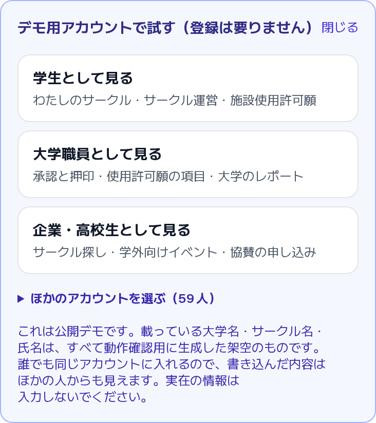
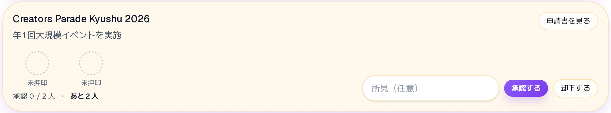
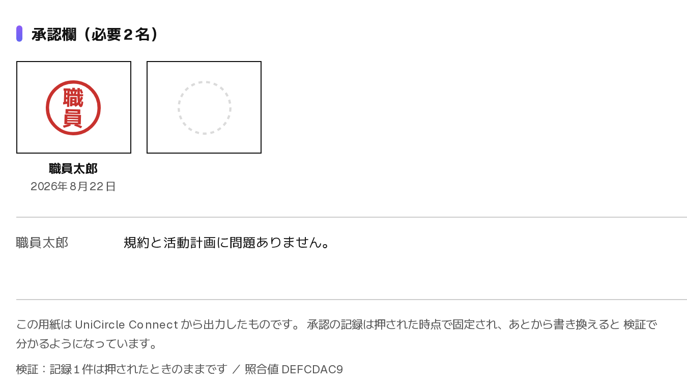
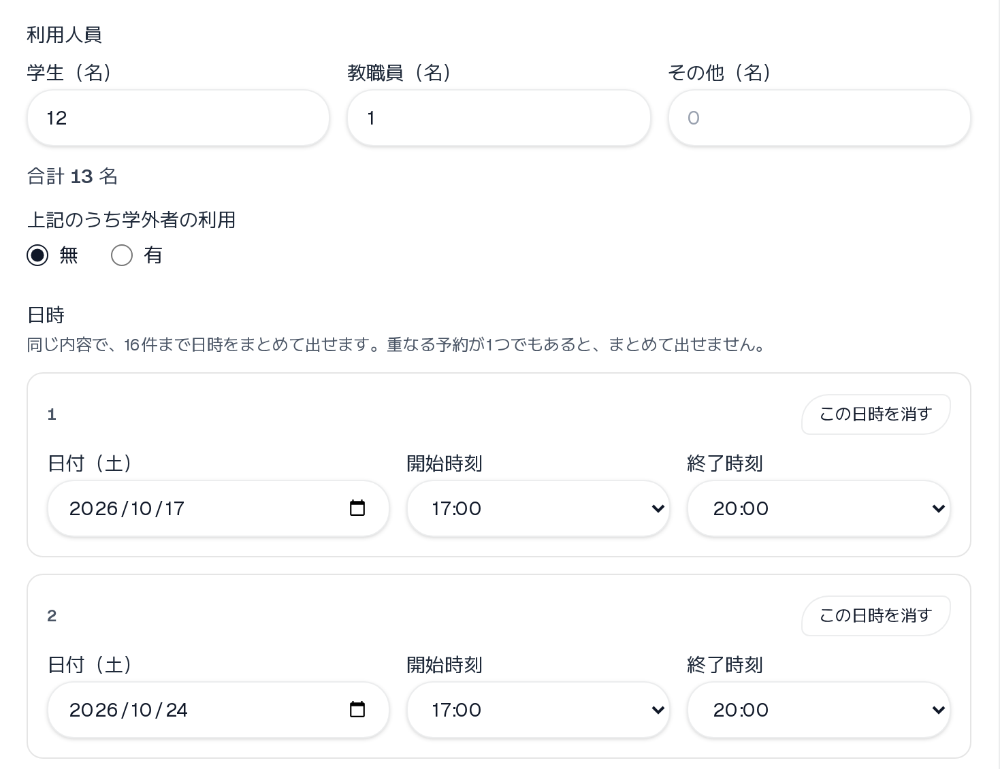
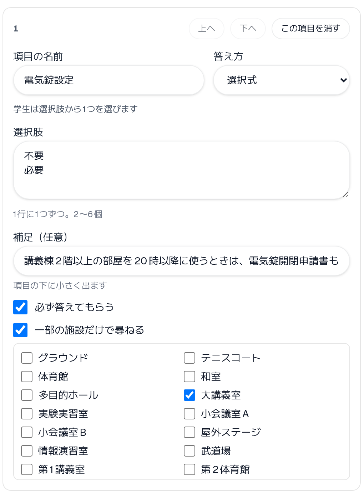
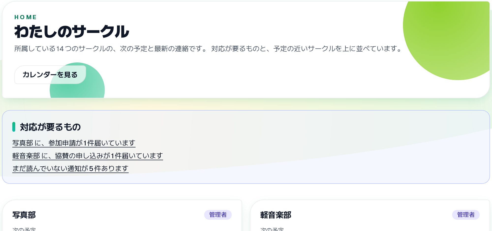
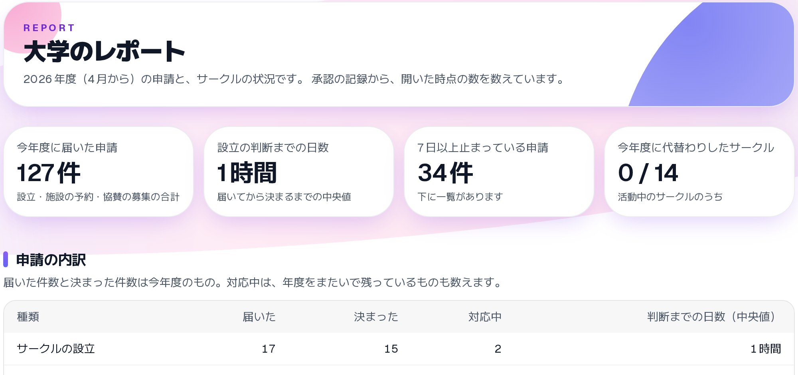
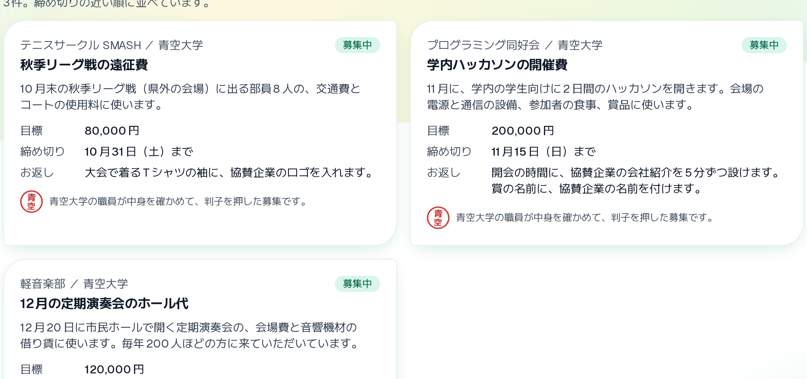
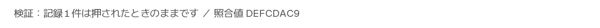

ハッカソン発表
UniCircle Connect
サークルの申請・承認・連絡を、1つのアプリに
大学のサークルの設立や施設の申請、職員の判子、部内の連絡を1つにまとめた Web アプリです。公開デモに、登録なしで学生・職員・企業の立場で入れます。
紙とチャットに散らばる手続きを、1つのアプリにまとめました

ログイン画面のデモ用アカウント
公開デモに、登録なしで3つの立場で入れます
職員は申請書を読んだその場で、自分の判子を押します

対応待ちの申請（押す前）

申請書の承認欄（1人が押したあと）
設立に何人の判子が要るかは、大学ごとに決められます（1〜5人）
紙の使用許可願と同じ項目で、アプリから申請します

学生の入力（日時は16件までまとめて出せる）

職員が欄を足す
大学ごとに違う欄（電気錠など）は、職員が画面から足せます
学生・大学・企業のそれぞれに、開く理由を作りました
学生

わたしのサークル
所属するサークルの予定と連絡、返事が要るものが1画面に並びます。
大学

大学のレポート
届いた申請の件数、判断までの日数、止まっている申請が分かります。
企業

協賛
職員が中身を確かめて判子を押した募集にだけ、協賛を申し込めます。
3者が、大学が確かめた同じ記録の上でつながります
判子の記録を前の記録とつなぎ、書き換えると分かるようにしました

申請書の下に出る検証の結果
2人がほぼ同時に押しても、案件ごとに順番につなぎます
見える範囲と書き込みを、データベースで守っています
見える範囲
書き込み
二重予約
182件
データベースの検査
106件
画面を操作する検査
データベースの検査は、push のたびに自動で流しています
大学が確かめた記録を土台に、学生・大学・企業をつなぎます
unicircle-connect-v2.vercel.app
QR から、登録なしで試せます